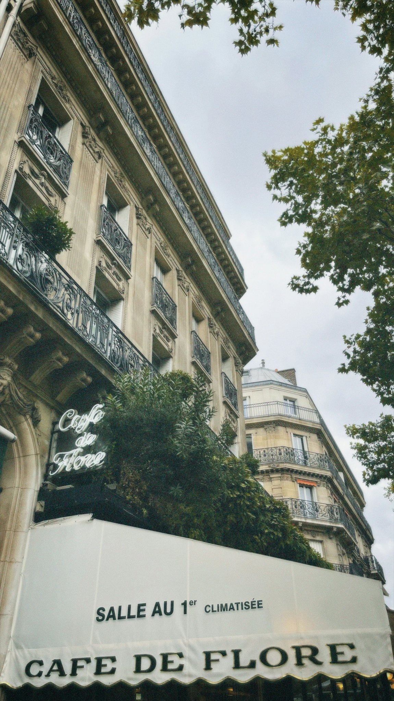
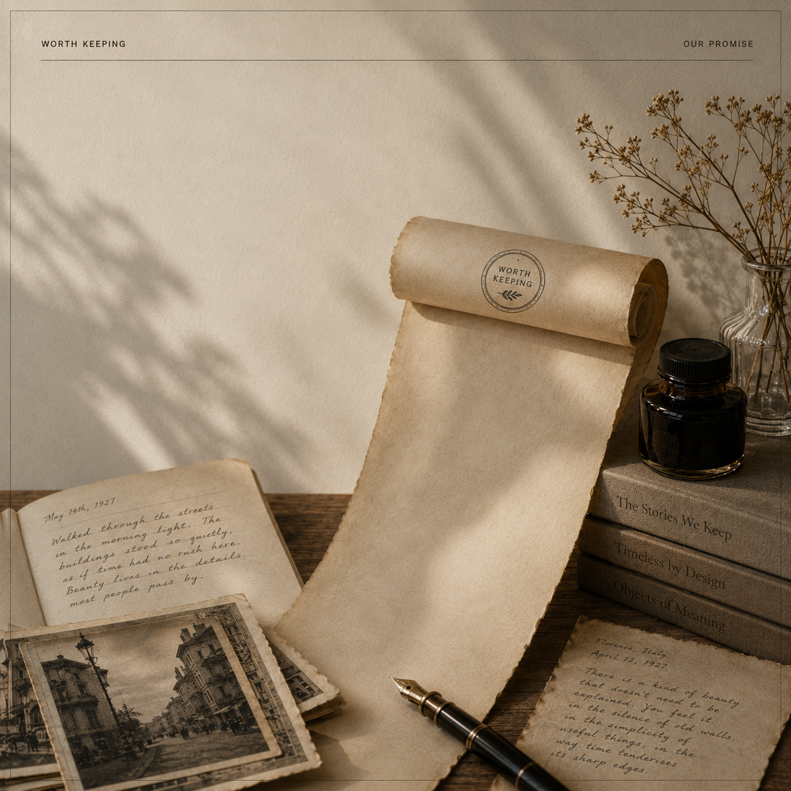

Worth Keeping
SOME THINGS ARE
too beautiful, too thoughtful,
or too important to disappear.
A COLLECTION OF WHAT DESERVES TO LAST.
BEGIN READINGWhat
deserves
to last?
Not everything deserves a place in our memory.
Some things earn it.
Some things are worth keeping.
THE ONES THAT LEAVE SOMETHING BEHIND.

QUESTION No. 03
✦
What's something small that changed everything?
LATEST PUBLICATION
The Café
That Sold Time
A Paris café has survived wars, revolutions and generations. Not because of its coffee. Because of what it lets people become.
READ STORYFIVE WAYS TO NOTICE
The Collection
ABOUT
Why Worth Keeping?
We believe that in a world that moves too fast, the most meaningful things are often the ones we almost lose.
Worth Keeping exists to slow down, to look closer, and to preserve the stories, places, ideas and objects that continue to shape how we live.
OUR PURPOSE
To Notice.
To Remember.
To Preserve.
We curate with care and share only what we truly believe deserves to be remembered.
WHAT WE SHARE
OUR PROMISE
Thoughtful.
Timeless.
Never Noise.
No clickbait. No filler. Just meaningful content, made to be read, saved and shared for years to come.

Begin.
THERE IS SO MUCH WORTH KEEPING.
Stories. Places. Design. Craft. Small reminders of what makes life richer, deeper, and more meaningful.
Stay curious. Stay kind. Stay attentive.
The best things are often the quietest.